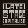
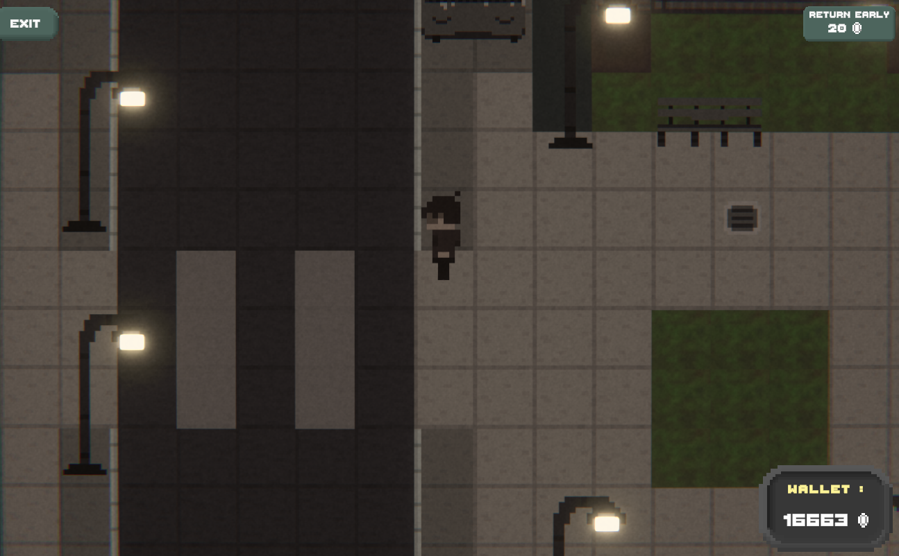
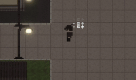
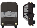
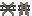
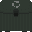
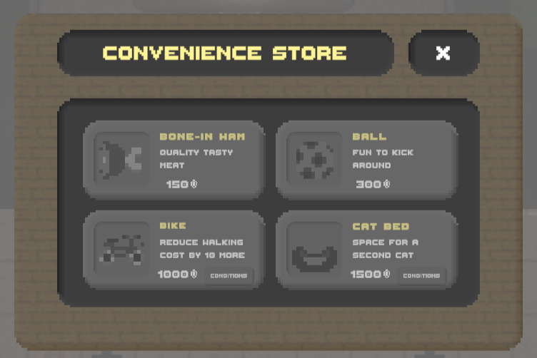
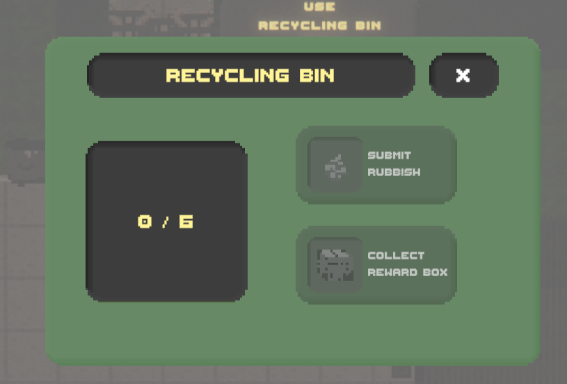
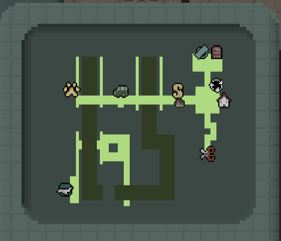

Magna
Sed nisl arcu euismod sit amet nisi lorem etiam dolor veroeros et feugiat.

An exploration-based incremental clicker - Yogscast Jingle Jam 2024
Project Type:
Game
Platform:
PC/WebGL
Team Size:
Solo
Role:
Solo Developer
Engine/Software:
Unity
Project URL:
Late Stage Capitalism is a grim clicker-type game where the player controls a depressed desk worker trying to escape the endless cycle of earning and spending. In this world, every action has a price to pay, every step needs to be earned. To succeed and reach the hard-earned vacation they need, they must work dilligently at their computer, saving every penny they can to buy upgrades, earn more, explore further and unlock areas.
This game was made in two phases, during two seperate jam events : the first seeing the development of the base game, and the second fixing issues, adding the soundtrack, and adding extra polishing features to make the game more enjoyable following feedback.
In the original jam, hosted by the Yogscast channel, the theme was "Everything has a cost". As I was interested in the clicker/incremental genre of games, I decided to opt for clicker-style earning of resources, with another section of the game dedicated to spending the currency. In that section, the "city", nearly every action the player makes costs currency and the further away they go, the higher the cost to keep progressing.
Late Stage Capitalism steers far away from a cheerful mood. Playing with the themes of helpless repetition, boredom, and poverty, this choice is reflected by the desaturated colors, industrial sounding soundtrack, as well as the low amount of visual effects and animated feedback. Everything looks dull and tired, almost drained of life.

Visuals example of the city decor
By adding some postprocessing effects, the game gains an old VHS feel to it that combines with the simplistic pixel art style. Combined with the low saturation and brown tint to the overall colors, this gives a very bleak impression on the player visually. This combination of colors and visual style is reminiscient of dystopias, especially how the media and games represent communist dystopias inspired by the USSR regime and propaganda. By using these codes in a game about capitalism's shortcomings, this shines light on how two very different systems can fail in similar ways.

Demo of the visuals in movement
Clicker-style income: in the room, the player can mash a key on their keyboard to fill income bars, mimicking what their character is doing in the game.
Income Upgrades: with enough money saved, the income bars can be upgraded to earn more, and/or to earn faster (with less clicks).
World Movement: outside the room, the player moves in a grid pattern accross the city. Each step costs, depending on where in the town you are.
Shops and Stations: in the city, the player can reach interactible areas, that can open up shops to unlock more content, remove blockades in the way, or give items to NPCs to unlock sections.
Conditional content: some content, either areas to explore or items to purchase from shops, require other steps to be accomplished before becoming available, and can only be accessible by having purchased a specific item (ex: walking on roads, buying a car..)
Auto-clickers: once advanced enough in the game, the player can buy themselves cats at the pet store for relief that will passively click while they are in the room, earning some money without needing to click manually as much.
Interactive MiniMap: to help navigate efficiently the city and prevent frustration from spending money walking aimlessly around, the game features a map that tells the player exactly where they are and where the shops are.
Self-Made soundtrack: with very little experience in music-making, I challenged myself in the second event to add two musics, one for each part of the game, to fit more precisely the ambiance and vision I had for the game



Sprites of world decors
In LSC, upgrades are split into two categories : room, and world upgrades.
For world upgrades, they are obtained by purchasing items at the various stores spread in the city. Each item is bought once,
and unlocks features. In some cases, the items are locked at first. For these instances, other items must be purchased first
in order to have access to them.
Purchased items can unlock features such as bypassing world obstacles, new room upgrade levels, or stat boosts.

Shop UI of the Convenience Store
In the room, along the income bars, the player can purchase upgrades that boost their income. They will either increase the amount
obtained each time a bar is filled, or increase the amount by which the bar progresses at each click.
By default, the room only has one income bar, as well as only the income value upgrade available, until at most level 20. Once
the correct world items have been purchased, this can be raised to two bars, and 40 levels on each upgrade type.
Finally, if the
player collects enough rubbish around the world, they can get a cardboard box necessary to host a cat, which in turns unlocks
passive clicking while in the room.

Recycling Bin UI
After some tests with players during the jam, I noticed that players had a hard time knowing where to go in the level, and losing lots of time wandering around while that was punished for by the game's mechanics. Because of that, I took the opportunity to work on a minimap system.

Minimap UI
Using markers on objects needing a map icon, I placed reference points both in the city and in the map UI, serving as anchors from which to compare the objects's positions and correctly display them in the map UI.
Each shop and station has its icon, with a dedicated tooltip on hover to help the player know what to expect at that spot. For performance reasons, the player is also the only icon who's position get updated during the game.